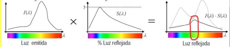
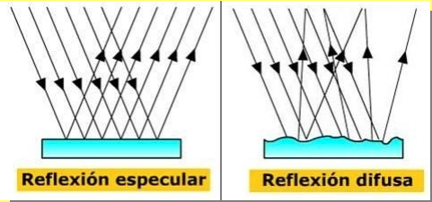
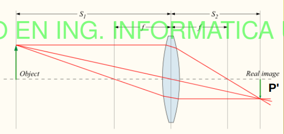
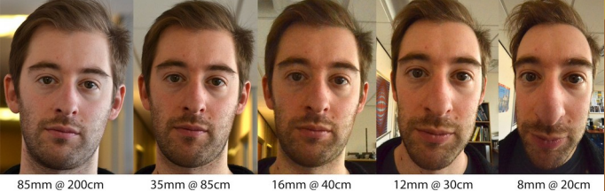
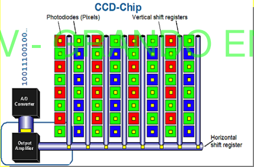
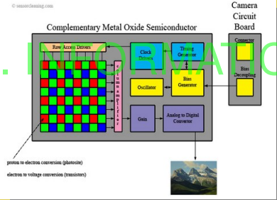

1. Módulo de Adquisición
En esta sección vamos a conocer los distintos elementos hardware que integran el módulo de adquisición SIVA
La Luz
La luz es una onda electromagnética capaz de ser percibida por el ojo humano y cuya frecuencia determina su color.
Espectro Visible:

Sistemas de Formación de la Imagen
Para poder formar una imagen digital capturada del mundo real, vamos a necesitar los siguientes elementos fundamentales:
- Una fuente de Luz:
- Un objeto que reciba la luz, la refleje :
- Un sensor o receptor de la luz:
Siendo la luz total dentro de un periodo de tiempo acotado:

Los Objetos
El comportamiento de la luz y la captura de imágenes esta directamente relacionada con las propiedades de los objetos en estas.
Propiedades:
- Absorbentes: Selectividad del espectro, definen el color del objeto.
- Reflexivas: Materiales que reflejan parte de la luz que reciben (Especulares o Difusos).
- Transmitivas: El paso de la luz a través de ellos (Ópacos, Translucidos y Transparentes).

Tipos de Fuentes de Luz
Dentro de la captura de imágenes nos pueden interesar distintos tipos de iluminación en función de los parámetros de la escena.
Estas pueden ser Natural, Incandescente, Fluorescentes, Estroboscópica, Láser, LED ...
Además de las fuentes de luz se pueden aplicar distintas técnicas.
- Direccional: Lateral, Coaxial, Campo Oscuro
- Difusa
- A contraluz
- Iluminación Estructurada
| Técnica | Ventajas | Desventajas | Aplicaciones |
|---|---|---|---|
| Direccional (Lateral) | Resalta texturas y detalles. | Sombras fuertes pueden ocultar detalles. | Inspección de superficies, detección de grietas. |
| Direccional (Coaxial) | Iluminación uniforme sin sombras. | Pérdida de contraste en superficies texturizadas. | Componentes electrónicos, reconocimiento de patrones. |
| Direccional (Campo Oscuro) | Resalta bordes y defectos en relieve. | Ineficaz en superficies lisas. | Inspección de defectos en metales y vidrio. |
| Difusa | Elimina sombras y reflejos. | Baja el contraste en texturas finas. | Inspección de superficies reflectantes. |
| A Contraluz | Silueta clara para medir contornos. | Sin información de color o textura. | Medición de perfiles, inspección de bordes. |
| Estructurada | Permite reconstrucción en 3D. | Requiere procesamiento adicional, sensible al movimiento. | Escaneo 3D, análisis de volumen. |
El Modelo de Lente Fina
El modelo de lente fina es una simplificación idealizada del comportamiento óptico de una lente. Este modelo asume que la lente tiene un espesor despreciable y que los rayos de luz pasan a través de un solo plano central.
Hay que aclarar que se hace uso de una lente convergente.
Se rige por esta fórmula:
Donde:

Vamos a denotan
(También hay que aclarar que esta definición es para que yo la entienda mejor puedo no estar bien expresado).
A partir de aquí vamos a hablar de algunos parámetros de lente:
Distancia focal :
La distancia focal es la distancia entre el centro de la lente y el punto donde los rayos de luz paralelos al eje óptico se enfocan (el punto focal).
Cuanto menor sea la distancia focal mayor dispersión de la imagen habrá, por lo tanto más borrosa.

Coeficiente de Magnificación :
La magnificación o aumento en una lente fina describe cómo cambia el tamaño del objeto al formar su imagen.
- Si
- Si
Aquí pondré la deducción matemática de la distancia focal a partir del aumento:
Tomamos de referencia esta imagen:
A partir de los cuales se obtienen 2 triángulos semejantes (Ambos angulos son el mismo).

Aplicando reglas trigonométricas se obtiene que:
Igualamos:
Despejamos en función de
Diafragma :
-
El diafragma es un mecanismo ajustable dentro del lente de una cámara que regula la cantidad de luz que pasa a través de él. Funciona como un orificio circular cuya apertura puede cambiarse para controlar la intensidad de luz que alcanza el sensor o la película.
-
La apertura se mide en términos del número
-
Control de Luz: Al abrir más el diafragma, entra más luz, y al cerrarlo, entra menos luz.
-
Profundidad de Campo: Una apertura mayor (número
Número
El número
Hay que detallar que
Aquí voy a poner algunas aplicaciones de distintos usos de números
-
Retratos: Un número
-
Paisajes: Un número
-
Fotografía Nocturna: Usar un número

El Sensor (La Cámara)
Dentro de los sensores de cámara podemos distinguir 2 tecnologías muy importantes:
-
CCD -
CMOSCCD (Charge-Coupled Device)
-
Funcionamiento: Los sensores CCD convierten la luz en carga eléctrica, que se transfiere a través de la matriz de píxeles a un convertidor analógico-digital (ADC) para formar una imagen.
-
Calidad de Imagen: Generalmente, los sensores CCD ofrecen una mejor calidad de imagen en términos de ruido, sensibilidad a la luz y rango dinámico. Esto se debe a su diseño que minimiza el ruido electrónico.
-
Sensibilidad a la Luz: Tienen una alta sensibilidad, lo que los hace ideales para fotografía en condiciones de poca luz.
-
Consumo de Energía: Consume más energía que los sensores CMOS, lo que puede ser un factor limitante en aplicaciones portátiles.

Ventajas
- Menos Ruido: Producen imágenes con menos ruido, especialmente en situaciones de baja iluminación.
- Alta Calidad de Imagen: Proporcionan una mejor uniformidad en la respuesta del sensor, lo que se traduce en una mayor calidad de imagen.
Desventajas
- Costo: Generalmente más caros de producir que los sensores CMOS.
- Velocidad: Tienen velocidades de lectura más lentas, lo que puede ser una desventaja en aplicaciones de video de alta velocidad o en captura de imágenes en ráfaga.
Aplicaciones
- Usados en cámaras profesionales, telescopios, y aplicaciones científicas donde se requiere alta calidad de imagen.
CMOS (Complementary Metal-Oxide-Semiconductor)
Características
-
Funcionamiento: Los sensores CMOS utilizan transistores individuales para cada píxel, lo que permite que cada píxel convierta la luz en carga eléctrica y la procese directamente.
-
Calidad de Imagen: Aunque han mejorado significativamente en calidad de imagen, los sensores CMOS pueden tener más ruido que los CCD en condiciones de poca luz, aunque esto ha mejorado en modelos recientes.
-
Consumo de Energía: Más eficientes en términos de consumo de energía, lo que los hace adecuados para dispositivos portátiles.
-
Velocidad: Ofrecen velocidades de lectura más rápidas, lo que es beneficioso para video de alta velocidad y captura de imágenes en ráfaga.

Ventajas
-
Bajo Costo: Generalmente son más económicos de producir y pueden ser integrados en un solo chip.
-
Bajo Consumo de Energía: Tienen un menor consumo energético, lo que es ideal para dispositivos móviles.
-
Alta Velocidad: Proporcionan altas velocidades de lectura, útiles para aplicaciones de video.
Desventajas
- Más Ruido: Pueden ser más susceptibles al ruido, especialmente en condiciones de poca luz.
- Calidad de Imagen Inferior: Aunque han mejorado, en algunas aplicaciones pueden ofrecer una calidad de imagen inferior comparada con los CCD.
Aplicaciones
- Usados en cámaras de teléfonos móviles, cámaras digitales de bajo consumo, y en la mayoría de los dispositivos de imagen de bajo costo.
| Característica | CCD | CMOS |
|---|---|---|
| Calidad de Imagen | Mejor en condiciones de poca luz | Mejorando, pero puede ser más ruidoso |
| Costo | Más caro | Más económico |
| Consumo de Energía | Mayor consumo | Bajo consumo |
| Velocidad | Más lento | Más rápido |
| Aplicaciones | Cámaras profesionales y científicas | Cámaras de consumo y dispositivos móviles |
Otra comparativa de estas tecnologías es que los dispositivos CMOS tienen menos efecto Blooming o Efecto Halo a diferencia de los CCD, en cambio los CCD tienen menos efector Rolling Shutter
Blooming: es un efecto que ocurre principalmente en los sensores CCD. Aparece cuando un píxel se sobresatura al recibir más luz de la que puede manejar, lo que provoca que la carga de ese píxel "rebose" a los píxeles vecinos, generando halos brillantes o áreas sobreexpuestas en la imagen.
Rolling Shutter: es un artefacto que aparece principalmente en sensores CMOS. En lugar de capturar toda la imagen a la vez, los sensores CMOS suelen leer cada fila de píxeles de forma secuencial. Esto crea un desfase temporal en la captura de la imagen, lo cual produce distorsiones en objetos en movimiento o en escenas con movimientos rápidos.